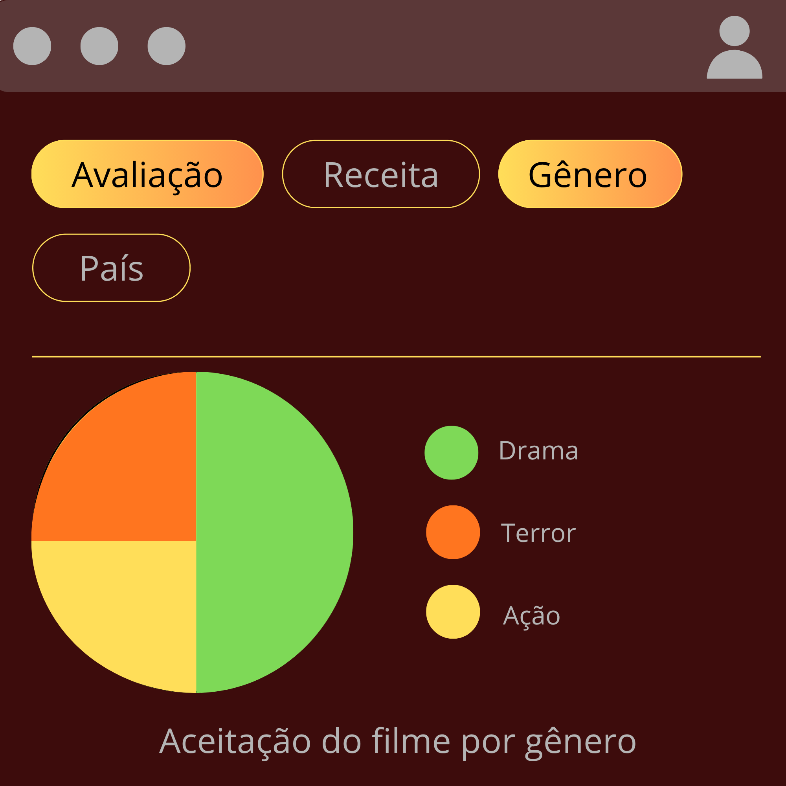
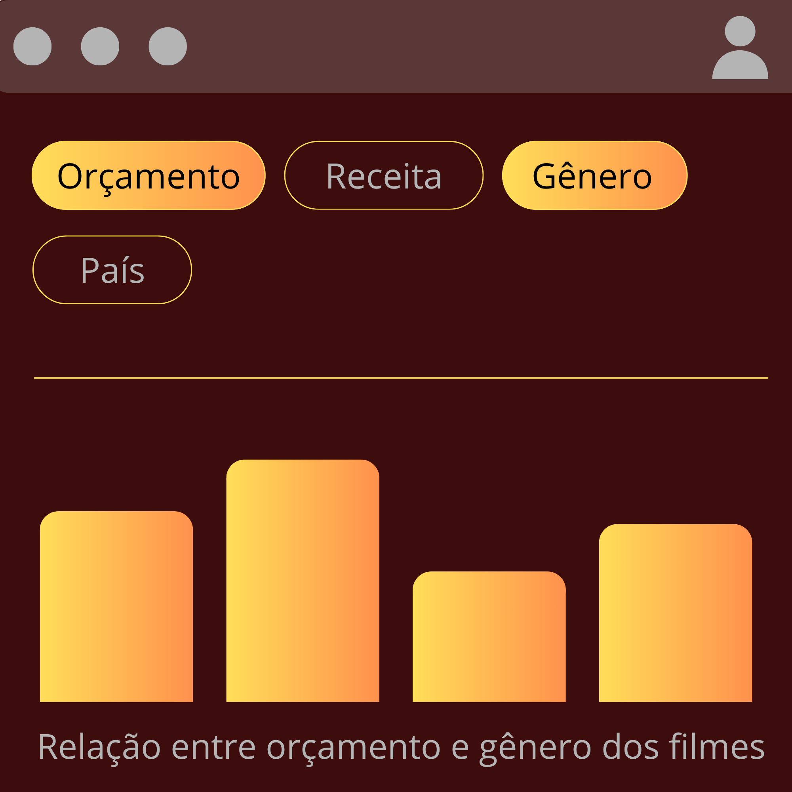

Problema
Ele sabe escrever, mas não sabe se vale a pena escrever aquela história.
O catálogo da Netflix guarda milhares de informações — gênero, país, diretor, elenco, data de lançamento — mas ninguém usa esses dados pra decidir nada. Eles existem só como registro, e por isso, decisões importantes acabam sendo tomadas no achismo.
Ele precisa decidir em qual filme investir.
Solução
O objetivo deste projeto é analisar e enriquecer uma base de dados de filmes para compreender quais características das produções estão relacionadas à aceitação do público e ao seu desempenho financeiro. Para isso, serão analisadas e relacionadas informações como gênero, orçamento, receita, avaliação, país, idioma e características presentes nas sinopses, buscando identificar padrões e relações entre esses dados que não são evidentes quando observados individualmente.


Quem somos

Larissa Cardozo
Nathan Fioravantti
Giovanna Flores
Gabriel Fernandes

Matheus dos Santos
David Cavalcante